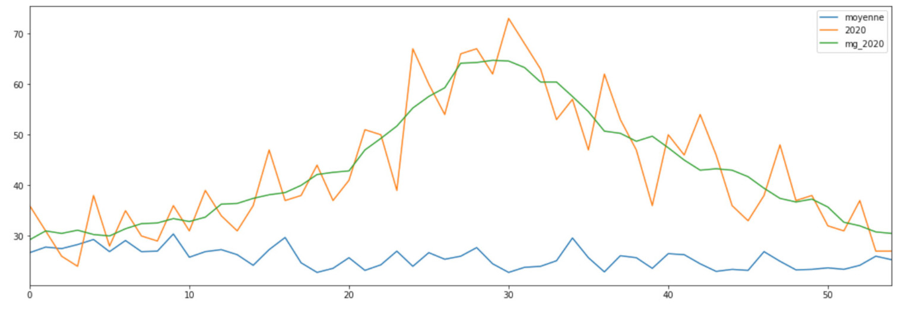

Portfolio - Raphaël da Silva
Datajournaliste / Data Analyst
Visualisation statique en Python : une carte à bulles proportionnelles
Blog personnel
Jointures, fonctions, pivots : une routine pandas appliquée à la vaccination contre la covid-19
Blog personnel
Âge, revenu, ésotérisme… Pourquoi le Grand Est affiche des taux de vaccination si différents ?
Rue89 Strasbourg
Prix du m² dans la Métropole de Lyon : exploration et sélections
Blog personnel
Départementales en Alsace : retrouvez vos candidats
Rue89 Strasbourg
Augmenter les photos SentinelHub avec Python
Blog personnel
Toutes causes confondues, la Covid a tué jusqu’à cinq fois plus d’Alsaciens pendant la crise
Rue89 Strasbourg
Traiter les données de mortalité INSEE avec pandas

Blog personnel
Législative partielle : la droite bloquée à l'Est
Rue89 Strasbourg
Parcourir le patrimoine excentré de Nancy avec OSMnx
Blog personnel
Marchés publics : ce que la CUS a dépensé en 2014
Rue89 Strasbourg
Comprendre l’ancrage du FN en Alsace en cinq cartes
Rue89 Strasbourg